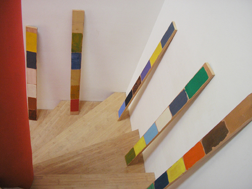
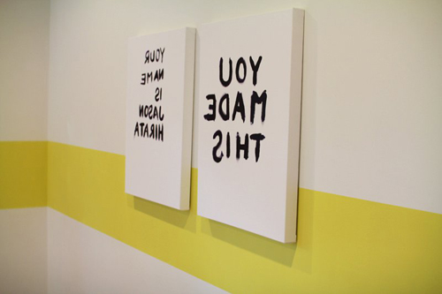
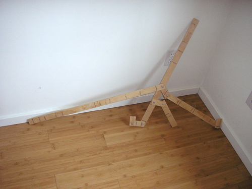
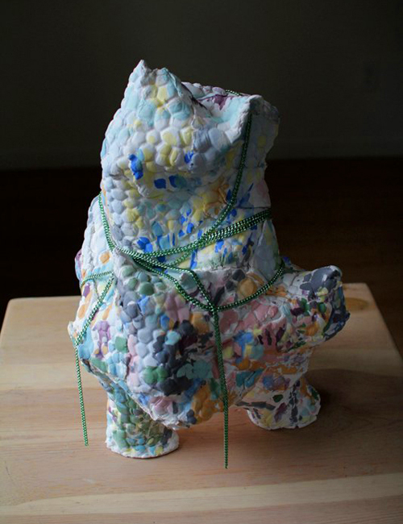
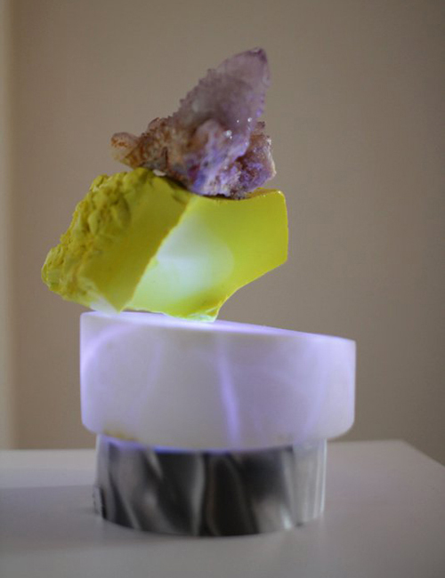
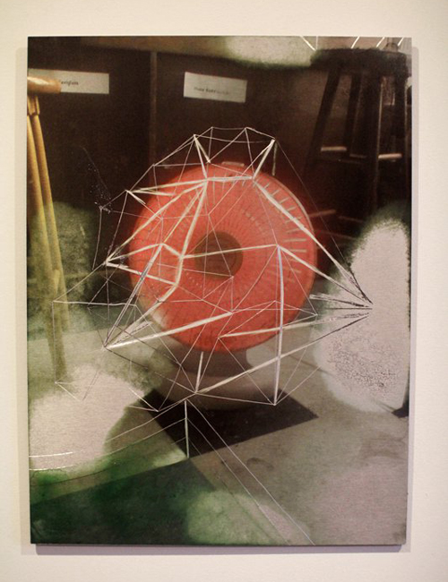
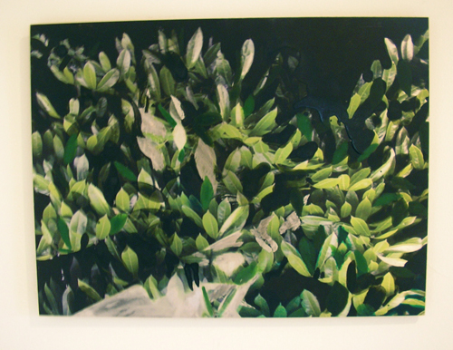
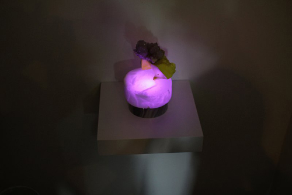
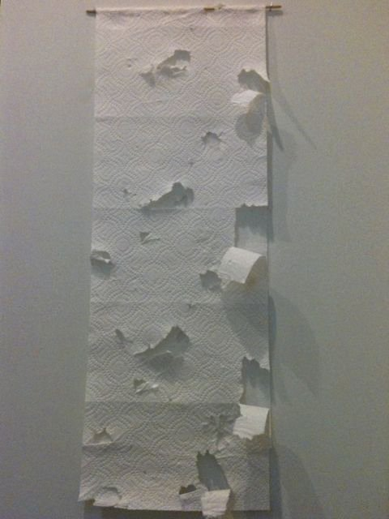

Encounters
curated by Chauney Peck
May 7 - 30 2011

Chauney Peck

Jason Hirata

Matt Hilger

Nicholas Nyland

Debra Baxter

Tim Cross

Tim Cross

Debra Baxter (glowing in the dark)
For this show Chauney chose five artists whose work she enjoys and asked them each to select a work to install at NEPO. The disparate works, when brought together, provide a surprise encounter...similar to putting wild animals in a room together. Following the tradition established by artists at previous Little Treats, as a small culinary treat Chauney made and served apple crisp with ice cream. Later on we watched Werner Herzog's Encounters at the End of the World.
More images from the opening are here. Also during the opening, Matt Hilger unbalanced Nepo House. See more images of his interventions.
And finally, one more piece hiding in the bathroom:

Tim Cross (plus cat)
NEPO Little Treats: Encounters
opening Saturday May 7, 2011

Encounters
an exhibition curated by Chauney Peck
Debra Baxter
Tim Cross
Matt Hilger
Jason Hirata
Nicholas Nyland
For this show Chauney chose five artists whose work she truly enjoys. She asked each artist to select a work of their choosing. Rather than controlling the exact collection of objects herself, she hopes that this method will present an unknown discovery. The works together will be a surprise encounter similar to putting wild animals in a room together.
Please join us for the opening on Saturday May 7th 2011, 6 - 8 pm.
As a small culinary treat Chauney will make apple crisp served with ice cream. A screening of Werner Herzog's Encounters at the End of the World will follow at 8 pm.
This is our third installment in NEPO Little Treats series of exhibitions at NEPO House. Little Treats is a series of monthly shows that focuses on presenting new work by individual artists and small group shows. In order to avoid moving too much furniture the shows take place only and entirely in our entry room.